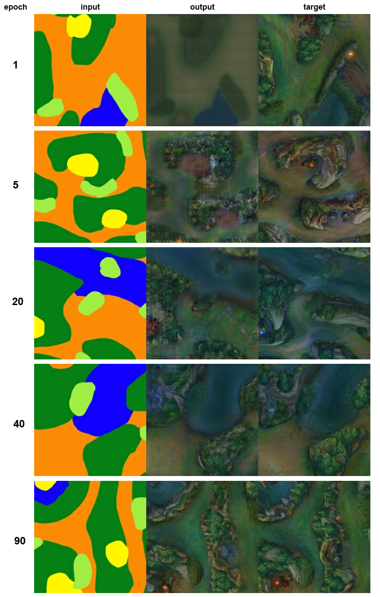

An implementation of pix2pix on the browser with Tensorflow.js. Once the sample loads, draw on the canvas to see it transform into the style of Summoner's Rift! (Code runs in real time, may take awhile. Mobile devices may not be able to handle the current model. Structures and camps aren't generated too well.) Code found here.
Loading Model ... (212 MB)
The model was trained on 143 pairs of images (color labels:SR) to attempt to generate new "interpretations" of Summoners Rift. Training data was generated from 256x256 slices of this labelling I painted:
After training over ~100+ epochs, here are some interesting images showcasing the model's progress:
